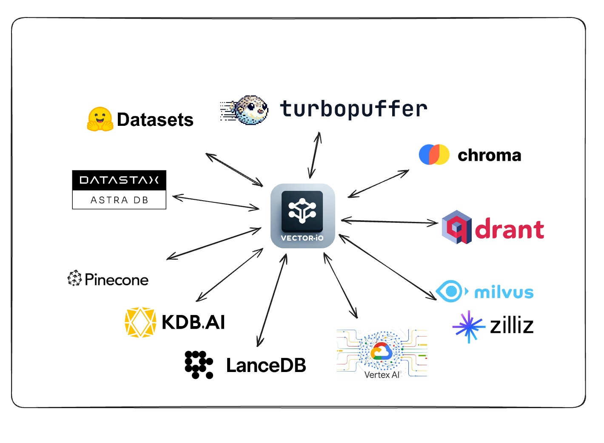

This library uses a universal format for vector datasets to easily export and import data from all vector databases.
Request support for a VectorDB by voting/commenting on this poll
See the Contributing section to add support for your favorite vector database.

| Vector Database | Import | Export |
|---|---|---|
| Pinecone | ✅ | ✅ |
| Qdrant | ✅ | ✅ |
| Milvus | ✅ | ✅ |
| GCP Vertex AI Vector Search | ✅ | ✅ |
| KDB.AI | ✅ | ✅ |
| LanceDB | ✅ | ✅ |
| DataStax Astra DB | ✅ | ✅ |
| Chroma | ✅ | ✅ |
| Turbopuffer | ✅ | ✅ |
| Vector Database | Import | Export |
|---|
| Vector Database | Import | Export |
|---|---|---|
| pgvector | ❌ | ❌ |
| Azure AI Search | ❌ | ❌ |
| Weaviate | ❌ | ❌ |
| MongoDB Atlas | ❌ | ❌ |
| Apache Cassandra | ❌ | ❌ |
| txtai | ❌ | ❌ |
| SQLite-VSS | ❌ | ❌ |
| Vector Database | Import | Export |
|---|---|---|
| Vespa | ❌ | ❌ |
| AWS Neptune | ❌ | ❌ |
| Neo4j | ❌ | ❌ |
| Marqo | ❌ | ❌ |
| OpenSearch | ❌ | ❌ |
| Elasticsearch | ❌ | ❌ |
| Apache Solr | ❌ | ❌ |
| Redis Search | ❌ | ❌ |
| ClickHouse | ❌ | ❌ |
| USearch | ❌ | ❌ |
| Rockset | ❌ | ❌ |
| Epsilla | ❌ | ❌ |
| Activeloop Deep Lake | ❌ | ❌ |
| ApertureDB | ❌ | ❌ |
| CrateDB | ❌ | ❌ |
| Meilisearch | ❌ | ❌ |
| MyScale | ❌ | ❌ |
| Nuclia DB | ❌ | ❌ |
| OramaSearch | ❌ | ❌ |
| Typesense | ❌ | ❌ |
| Anari AI | ❌ | ❌ |
| Vald | ❌ | ❌ |
pip install vdf-iogit clone https://github.com/AI-Northstar-Tech/vector-io.git
cd vector-io
pip install -r requirements.txtclass NamespaceMeta(BaseModel):
namespace: str
index_name: str
total_vector_count: int
exported_vector_count: int
dimensions: int
model_name: str | None = None
vector_columns: List[str] = ["vector"]
data_path: str
metric: str | None = None
index_config: Optional[Dict[Any, Any]] = None
schema_dict: Optional[Dict[str, Any]] = None
class VDFMeta(BaseModel):
version: str
file_structure: List[str]
author: str
exported_from: str
indexes: Dict[str, List[NamespaceMeta]]
exported_at: str
id_column: Optional[str] = Noneexport_vdf --help
usage: export_vdf [-h] [-m MODEL_NAME]
[--max_file_size MAX_FILE_SIZE]
[--push_to_hub | --no-push_to_hub]
[--public | --no-public]
{pinecone,qdrant,kdbai,milvus,vertexai_vectorsearch}
...
Export data from various vector databases to the VDF format for vector datasets
options:
-h, --help show this help message and exit
-m MODEL_NAME, --model_name MODEL_NAME
Name of model used
--max_file_size MAX_FILE_SIZE
Maximum file size in MB (default:
1024)
--push_to_hub, --no-push_to_hub
Push to hub
--public, --no-public
Make dataset public (default:
False)
Vector Databases:
Choose the vectors database to export data from
{pinecone,qdrant,kdbai,milvus,vertexai_vectorsearch}
pinecone Export data from Pinecone
qdrant Export data from Qdrant
kdbai Export data from KDB.AI
milvus Export data from Milvus
vertexai_vectorsearch
Export data from Vertex AI Vector
Searchimport_vdf --help
usage: import_vdf [-h] [-d DIR] [-s | --subset | --no-subset]
[--create_new | --no-create_new]
{milvus,pinecone,qdrant,vertexai_vectorsearch,kdbai}
...
Import data from VDF to a vector database
options:
-h, --help show this help message and exit
-d DIR, --dir DIR Directory to import
-s, --subset, --no-subset
Import a subset of data (default: False)
--create_new, --no-create_new
Create a new index (default: False)
Vector Databases:
Choose the vectors database to export data from
{milvus,pinecone,qdrant,vertexai_vectorsearch,kdbai}
milvus Import data to Milvus
pinecone Import data to Pinecone
qdrant Import data to Qdrant
vertexai_vectorsearch
Import data to Vertex AI Vector Search
kdbai Import data to KDB.AIThis Python script is used to re-embed a vector dataset. It takes a directory of vector dataset in the VDF format and re-embeds it using a new model. The script also allows you to specify the name of the column containing text to be embedded.
reembed_vdf --help
usage: reembed_vdf [-h] -d DIR [-m NEW_MODEL_NAME]
[-t TEXT_COLUMN]
Reembed a vector dataset
options:
-h, --help show this help message and exit
-d DIR, --dir DIR Directory of vector dataset in
the VDF format
-m NEW_MODEL_NAME, --new_model_name NEW_MODEL_NAME
Name of new model to be used
-t TEXT_COLUMN, --text_column TEXT_COLUMN
Name of the column containing
text to be embeddedexport_vdf -m hkunlp/instructor-xl --push_to_hub pinecone --environment gcp-starter
import_vdf -d /path/to/vdf/dataset milvus
reembed_vdf -d /path/to/vdf/dataset -m sentence-transformers/all-MiniLM-L6-v2 -t titleFollow the prompt to select the index and id range to export.
If you wish to add an import/export implementation for a new vector database, you must also implement the other side of the import/export for the same database. Please fork the repo and send a PR for both the import and export scripts.
Steps to add a new vector database (ABC):
src/vdf_io/export_vdf/export_abc.py
and src/vdf_io/import_vdf/import_abc.py for the new
DB.Export:
Import:
If you wish to change the VDF specification, please open an issue to discuss the change before sending a PR.
If you wish to improve the efficiency of the import/export scripts, please fork the repo and send a PR.
Running the scripts in the repo will send anonymous usage data to AI Northstar Tech to help improve the library.
You can opt out this by setting the environment variable
DISABLE_TELEMETRY_VECTORIO to 1.
If you have any questions, please open an issue on the repo or message Dhruv Anand on LinkedIn